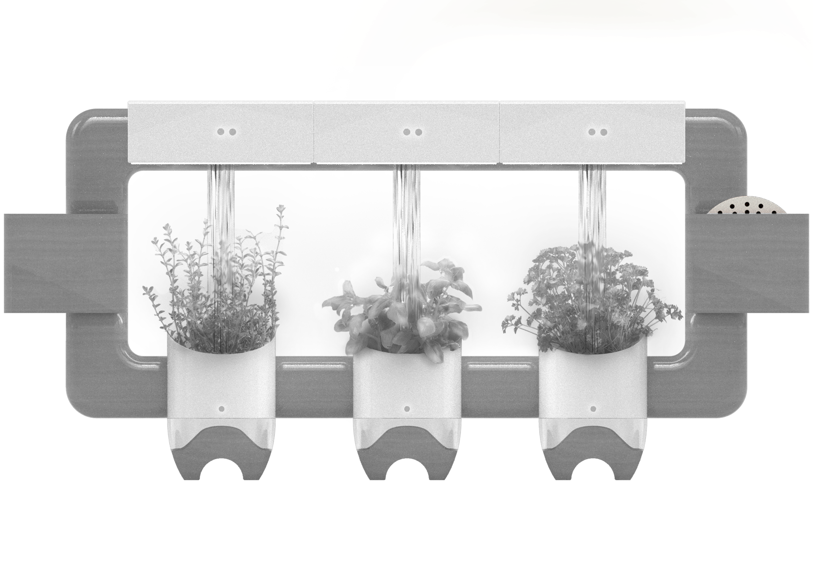
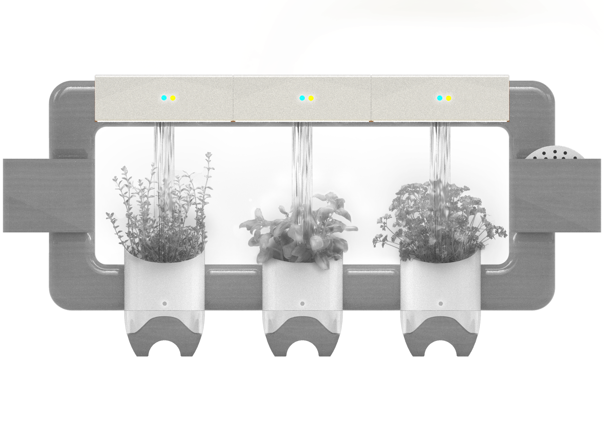
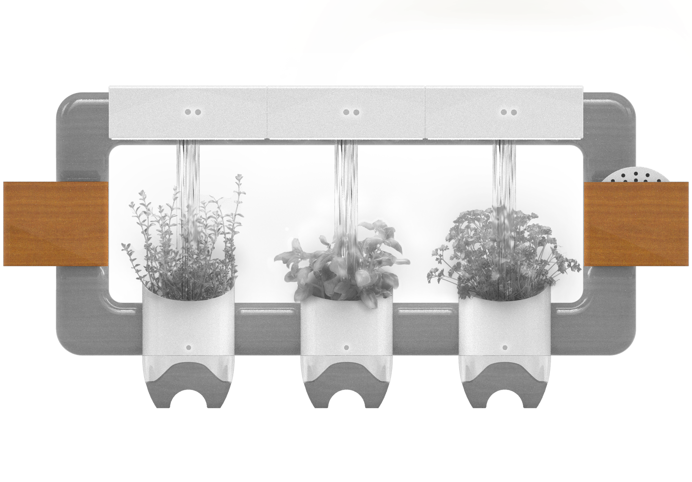
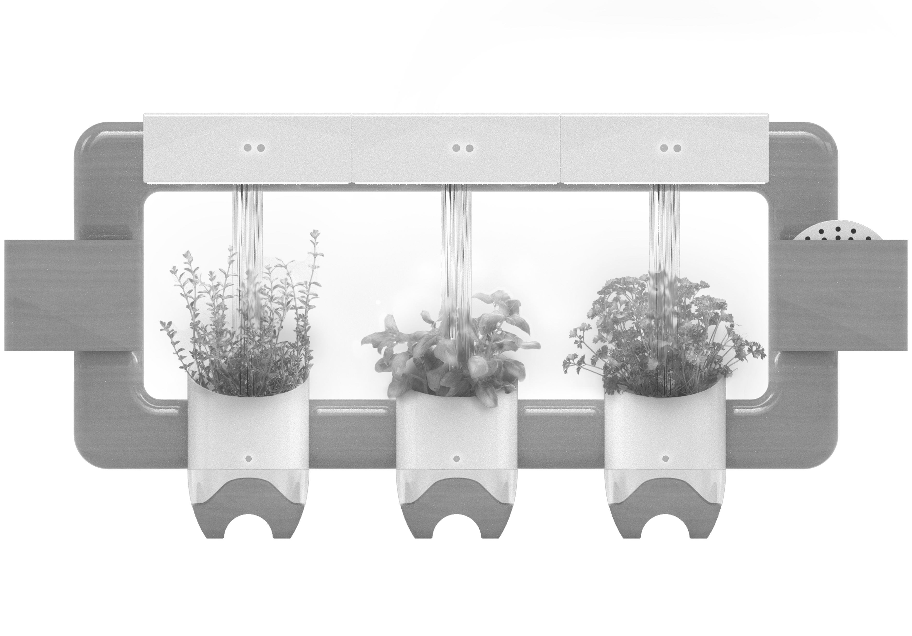

<!DOCTYPE html>
<html>
	<head>
		<title>Urthy</title>
		<link rel="stylesheet" href="urthy.css">
		<script src="urthy.js"></script>
	</head>

	<body>
		<!--
		<div class="description">
			<h1>Designing an Effortless<br>
				yet Emotionally<br>
				Connected Indoor<br>
				Gardening Experience.</h1>

			<div class="flexbox">
				<h4>With the uprise of people living in urban environments, finding time and space to take care of an indoor garden has become increasingly difficult. Our goal is to design a new indoor herb gardening system that offers fresh and dried herbs on demand with zero hassle, while retaining and celebrating the traditional horticulture methods. There are certainly current smart herb growing systems</h4>
				<h4>on the market such as Click and Grow and Aerogarden, but the issue with these products is that they only allow for fresh herbs and also have a very sterile white plastic and emotionally disconnected look to them. We hope to promote mental well-being by bringing back that emotional connection with gardening while providing an effortless growing experience.</h4>
			</div>
			
		</div>-->
		<!--
		
		
		
		
		-->
		<div class="top">
			
		</div>

		<!-- <script>
		// 	console.log('hello');
		// 	window.addEventListener("scroll", myFunction);
		// 	function myFunction(e) {
		// 		console.log("myFunction");
		// 	    console.log(window.scrollY);
		// 	}
	 //    </script>-->

	</body>
</html>